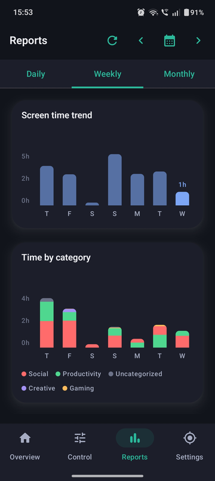

Seven numbers, three time ranges
Track your kid's phone usage automatically with Daily, Weekly, or Monthly reports — each with a usage trend chart and seven stat tiles: screen time, over-limit days, blocked-app attempts, average session length, and requests sent. Plus a weekly recap emailed to you automatically.

